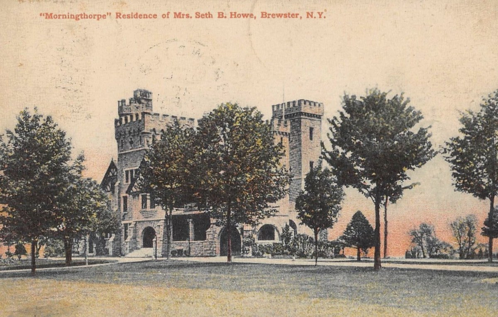
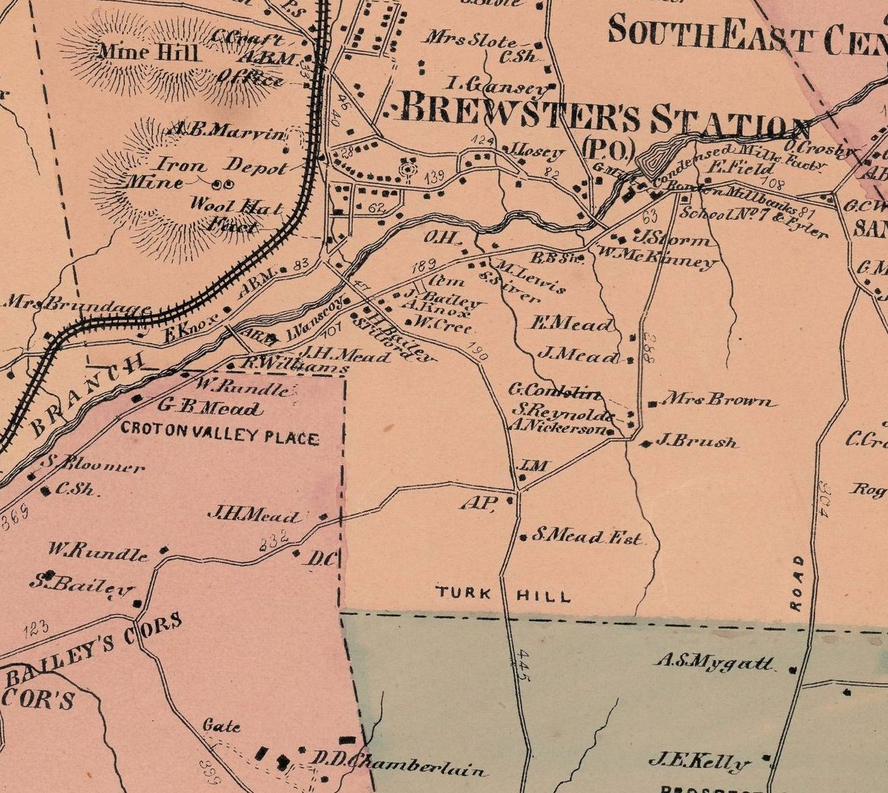
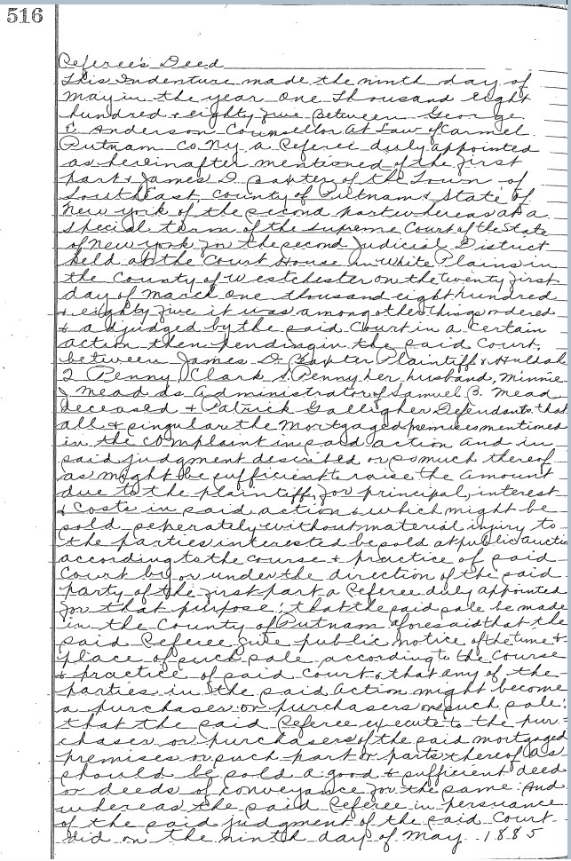
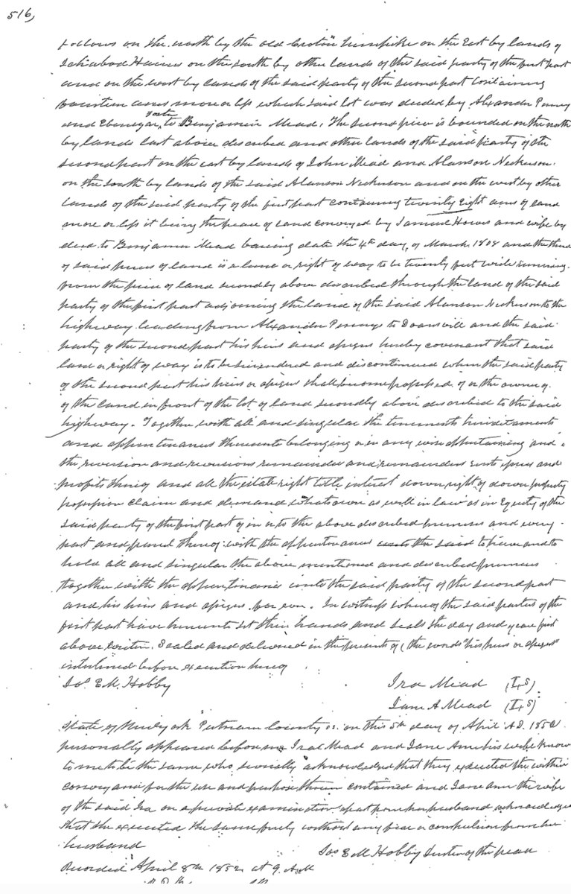
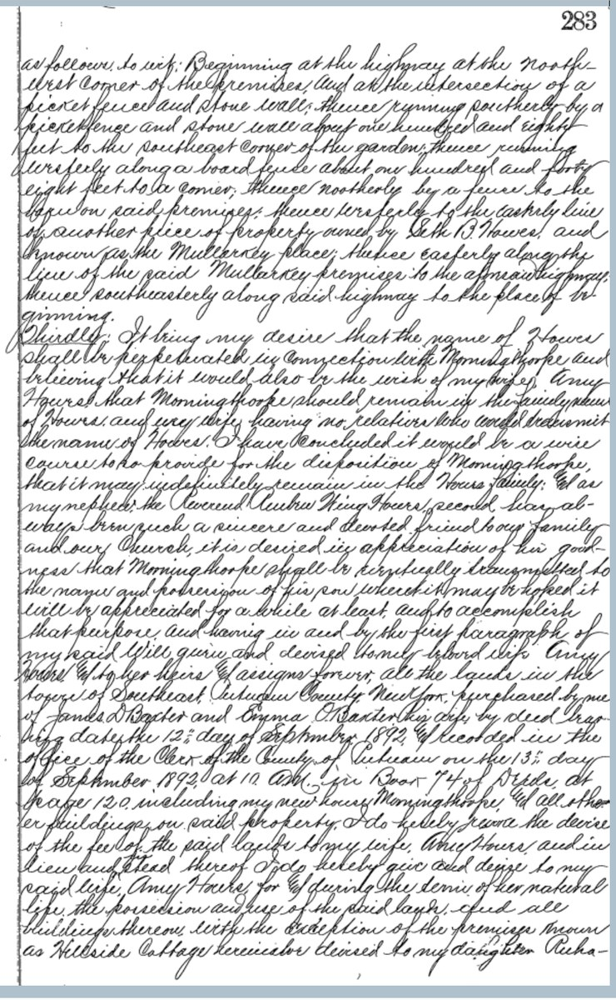
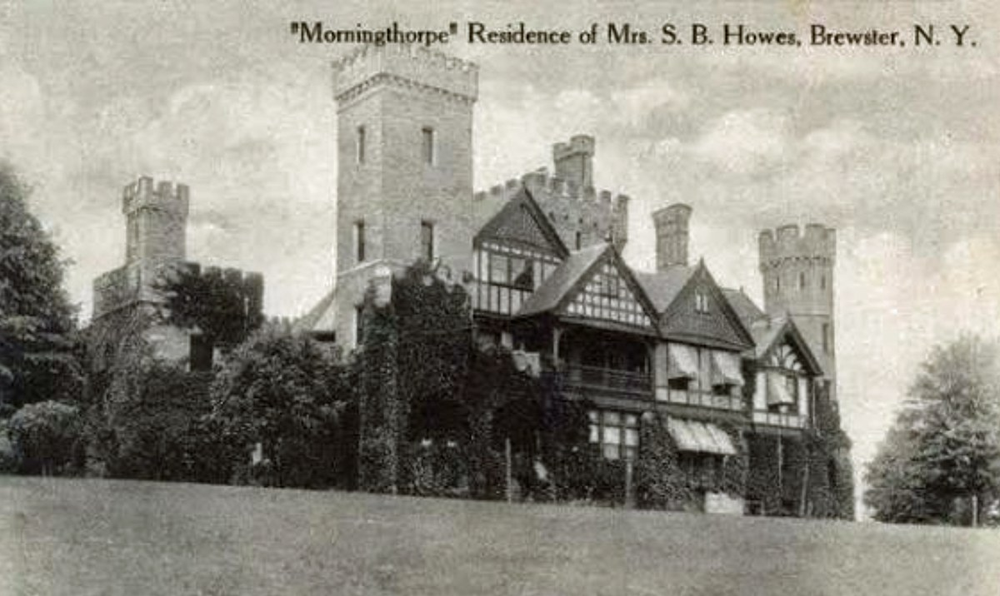
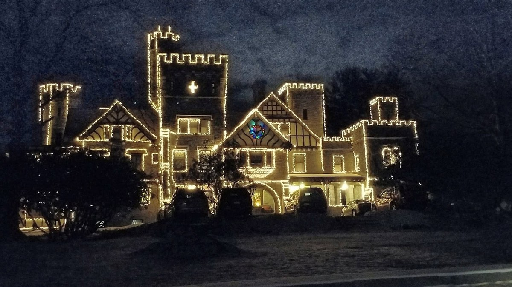

Morningthorpe
The circus king’s castle on Turk Hill — built on a horse dealer’s farm, held for two widows’ lifetimes, and sold at last under a will written for a hospital that did not yet exist.
Draft narrative — the documented spine below rests on deeds read in full in the Putnam County Clerk’s online records, on the probate record of Seth B. Howes’s will, and on contemporary newspaper accounts. Several instruments remain to be pulled; open items are listed at the end. Claims from family recollection are labeled as such. Occupancy and title are tracked separately throughout.

IThe Circus King Comes Home
Seth Benedict Howes was born in Southeast on August 15, 1815, and left it for the sawdust ring. A traveling circus pitched its tents near his home when he was about fifteen — the first show of its kind seen in the neighborhood — and at that same age he was apprenticed as a carpenter and builder to his elder brother Jacob Orson Howes: the man who would one day raise a granite castle began by learning to build with his own hands.[Pelletreau 1886, p. 503, PUBLIC] By 1841 he was a star rider at the Bowery circus in New York, posing as Mercury in a “Classical Riding Act” while the horse sped about the ring. He managed P. T. Barnum’s first traveling show in Europe, brought Franconi’s Roman hippodrome to America in 1853, and made a second fortune in Chicago real estate with Paul Cornell, buying into what became Hyde Park. When he died at Southeast on May 16, 1901, the New York Times reckoned his estate at $1,000,000 to $1,500,000 and called him a man known “by almost everybody, from the oldest citizen to the youngest street urchin” for miles around Brewster.[NYT, Aug. 16, 1901]
Late in life he kept two grand houses in the town. The first was Stonehenge, at Southeast Centre. The second — his last, the one he built for himself — was Morningthorpe.
IIThe Baxter Farm, 1892
The land under Morningthorpe was the Penny farm, and it came to James D. Baxter — a Brewster horse dealer — by his own foreclosure. Baxter, as plaintiff and mortgage holder, sued Huldah I. Penny and Clark S. Penny, her husband, joining Samuel B. Mead’s administratrix and one Patrick Galligher as junior parties; judgment of foreclosure entered at White Plains on March 21, 1885; and at the referee’s auction at the Brewster Town Hall on May 9, 1885, the two main parcels were struck off to Baxter himself for $3,400.[Liber 64/516, PRIMARY] And the farm was Mead land before it was Penny land: on April 1, 1878, Samuel B. Mead had conveyed both parcels to Huldah Penny for $12,000, the deed describing them as “the farms of land of which Ira C. Mead died seized” and subject to a $4,000 mortgage that Ira C. Mead and his wife had given to Emeline Kent of the Town of Kent.[Liber 57/141, PRIMARY] That Kent-family lien apparently rode through the foreclosure, for the mortgage Seth B. Howes assumed in 1892 was held by Daniel Kent — a family’s money on this land across at least three ownerships. The price arc tells the rest: $12,000 in 1878, $3,400 at the courthouse door in 1885 — the Penny equity wiped out — and $12,500 to the circus man in 1892. And the small third piece completes the pattern, for it was Penny land too: mortgaged to Deborah Woolsey, foreclosed by her executor against Clark and Huldah Penny, and struck off to Baxter at the Brewster Town Hall on December 1, 1882, for $1,095.[Liber 62/592, PRIMARY] Two courthouse strokes, one buyer — Baxter assembled the whole ninety-nine acres for $4,495, and the Penny family lost its ground at both sales.


On September 12, 1892, Baxter and his wife Emma Ophelia (Rundle) Baxter sold the whole of it to Seth B. Howes for $12,500, Howes assuming a $5,000 mortgage held by Daniel Kent as part payment.[Liber 74/120, PRIMARY] The deed conveys three parcels straddling the highway from Turk Hill to Brewster’s Station — now Turk Hill Road — about thirty acres on the east side, about sixty on the west, and a surveyed nine acres and twenty-six rods more: roughly ninety-nine acres by the deed’s own estimation, bounded by the lands of Clark Penny, the Meads, the Nickersons, Van Scoy, and lands formerly of Lewis Townsend, deceased. The farm came to Howes subject to a lease given George Sloat, running until April 1, 1894 — the millionaire bought a mortgaged, tenanted farm.
Baxter’s obituary, four years later, remembered the sale as a point of local pride: another gentleman had wanted the farm and was “abundantly able to pay a long price,” but Baxter did not wait for it, and the transfer of the Turk Hill farm to Seth B. Howes “brought about an expenditure of thousands of dollars” in the town. The same notice confirms the name came after the sale: Baxter had owned “the farm now known as ‘Morningthorpe.’”[Brewster Standard, Apr. 17, 1896]

IIIBuilding the Castle, 1892–1900
Construction began in the reservoir years — Amy Howes’s obituary places the building of Morningthorpe “about the time of the building of the Sodom Reservoir near Stonehenge”[Brewster Standard, June 10, 1927] — and the house was ready within two seasons of the purchase. In July 1894 the Standard reported that “S. B. Howes will soon occupy his new residence, ‘Morningthorpe,’” while his Southeast residence, Stonehenge, was advertised for rent.[Brewster Standard, July 13, 1894, PUBLIC] The work did not stop there: in March 1900 rough granite from the Hyatt quarries was being delivered “at Morningthorpe and on the grounds at St. Andrew’s church” — one patron’s stone program running on two sites at once, for Howes was then giving St. Andrew’s its stone edifice.[Brewster Standard, Mar. 9, 1900; June 10, 1927] Whether the 1900 deliveries went to walls, outbuildings, or additions is not established; what the record supports is a phased program — occupied by mid-1894, major stonework still arriving in 1900.
The finished house was, in the Times’s words, “a magnificent structure of cut stone” suggesting “an old feudal castle, with great turrets” — thirty rooms, half-timbered gables over the stone, a carriage house with a clock tower among its outbuildings. Its builder’s peculiarities furnished the town with stories: though the house held much that was rare and beautiful, Howes would never permit lamps or gas, and dinner guests ate by the light of fifty wax candles.[NYT, Aug. 16, 1901] A later account has it that Howes named the place for his family’s ancestral seat in England, and the record behind that claim turns out to run deep. Pelletreau’s county history of 1886 — published six years before the castle rose — devotes a page to Morning Thorpe, the Norfolk manor that came into the Howes line by marriage to the Roope family and remained with it until 1883, when its last heiress married out of the name; the same account notes a cut of Morning Thorpe, England, and the original will of the first American Thomas Howes, then in Seth’s own possession. The attachment to the name, in print and illustrated from Seth’s own materials, predates the house. The deeper pedigree behind it — a manorial “John de Huse (Norman?)” of 1065, a coat of arms granted in 1519 — is the family’s account as the county history printed it, and is reported here as tradition, not fact.[Pelletreau 1886, pp. 501–505, PUBLIC; Gannett Westchester, July 14, 1985, PUBLIC]
Nor was the castle’s hill the whole of the buying. Within a month of the farm deed Howes swept in the two small inholdings on the road frontage — the Mullarkey place, three-quarters of an acre quitclaimed by Winifred Mullarkey on September 20,[Liber 74/137, PRIMARY] and the adjoining hundred-foot lot of Emma F. Barnum, the notary’s wife, on October 8[Liber 74/204, PRIMARY] — the first tracing to the deceased John McIntyre, the second bought at an 1889 estate foreclosure and most likely from the same McIntyre source, though that referee’s file remains to be pulled. In 1897 he added the old Nickerson-Fowler farm on the east, eleven or twelve tenanted acres bought of Sarah J. Fowler’s heirs.[Liber 80/277, PRIMARY] And the will would reveal a working estate around the showpiece: a “new stone house directly across the highway from Morningthorpe and known as Spring Cottage,” occupied in 1897 by Arthur P. Budd, with a windmill and spring whose pipes fed the water tower on the mansion grounds; and Hillside Cottage, carved from the Baxter farm on the south side of the Brewster road.[Liber 87/277, 282–283, PRIMARY]
IVSeth’s Will: A Widow’s Use, a Grandnephew’s Remainder
Howes signed his will on July 5, 1897, and it was admitted to probate before Surrogate William Wood at Carmel on July 23, 1901.[Liber 87/272–287, PRIMARY] Its first clause gave his widow, Amy, the lands “purchased by me of James D. Baxter and Emma O. Baxter his wife” by the deed of September 12, 1892, “including my new house Morningthorpe, and all other buildings on said property,” together with the use of the mansion’s books, furniture, and bric-à-brac. The Times summarized the arrangement as a use for life: Mrs. Howes “gets the use of the mansion Morningthorpe,” and “this property upon her death is to revert to a grandnephew, Leander Townsend Howes, Jr., son of the Rev. Reuben Wing Howes second,” then residing at 40 West Ninth Street, New York.[NYT, Aug. 16, 1901]
The first clause’s words of inheritance — “to her heirs and assigns forever” — were real, and so was the life use: the reconciliation is the third codicil, of February 8, 1900, which expressly revokes “the devise of the fee of the said lands to my wife, Amy Howes, and in lieu and stead thereof” gives her “for and during the term of her natural life, the possession and use of the said lands,” the remainder passing at her death to the grandnephew — and to his “nearest male heir at law” if he did not survive her, “and if there be two or more of the male heirs at law of equal degree, then… to the eldest.”[Liber 87/283–285, PRIMARY] The codicil states its own motive with unusual candor: “It being my desire that the name of Howes shall be perpetuated in connection with Morningthorpe… and my wife having no relatives who would transmit the name of Howes,” and the Rev. Reuben Wing Howes, second, having “always been such a sincere and devoted friend to our family and our Church,” Morningthorpe “shall be eventually transmitted to the name and possession of his son wherein it may be hoped it will be appreciated for a while at least.” The castle was not merely left; it was entailed to carry the name. Two exceptions shaped the remainder: Hillside Cottage went to Seth’s daughter Ruhamah in fee, cut out of the farm entirely, and the Fowler lands followed the same life-use-and-remainder course as the castle itself.

The rest of the family architecture is equally deliberate. Ruhamah M. Heartfield took Stonehenge with the Mullarkey and Barnum parcels — the assembled row at the estate’s front door — besides her Chicago property; the second daughter, Julia Boisse, took Chicago real estate only, nothing in Brewster; the nephew Seth Howard Howes received $5,000 and the grandnieces Lydia M. and Bertha E. Howes, daughters of the deceased nephew Egbert C. Howes, $2,000 each. No niece is named anywhere in the will or its codicils, and no adopted or taken-in person appears among the beneficiaries — absences the record preserves as findings.[Liber 87/272–287, PRIMARY]
The same will endowed the Milltown Rural Cemetery Association with Chicago land and railroad stock, on conditions entirely in character: $150 a year for vases, shrubs, and ornaments about the Howes plot; a mausoleum whose inner granite door was to be “always kept fastened and locked with three locks,” with no one interred there except Howes and his wife; and — the estate’s quiet endowment — two hundred shares in trust, their income bound forever to the taxes, paint, and repair of Morningthorpe and Spring Cottage, their stone walls, and “the wind mill and Spring… and the pipes leading from said Spring and wind mill to the water tower.” His last testamentary act, a fourth codicil signed three weeks before his death, added $10,000 to the St. Andrew’s endowment and asked “that a competent person be appointed to keep the Church clock in good order, that it may always show the standard time in Brewster.”[Liber 87/275–287, PRIMARY]
VAmy’s Tenure, 1901–1927
Amy Mozley Howes — born in London, daughter of Aaron and Maria Warner Mozley, married to Howes in London and brought to America in 1864 — held Morningthorpe for twenty-six years, and the record of her tenure is a record of a house kept up and, increasingly, a house let out. In May 1913 the painter Hugh Brock was engaged to paint “all the exterior woodwork at Morningthorpe.”[Brewster Standard, May 30, 1913] In October 1918, when fire destroyed Bon-air, the summer home of Franklin W. Haines, Haines leased Morningthorpe “completely furnished for the term of one year” through the Budd agency and moved in at once.[Brewster Standard, Oct. 11, 1918, PUBLIC] A furnished one-year letting is the strongest evidence that the widow had by then removed to The Gables, her own house on Turk Hill — quite possibly on the Fowler farm Seth added in 1897, whose buildings the third codicil gave her for life; a candidate identification, not yet proven — and it was at The Gables, not Morningthorpe, that she died on Sunday morning, June 5, 1927, in her 86th year.[Brewster Standard, June 10, 1927, PUBLIC]

Her obituary settles two more things. First, her stepdaughter Ruhamah M. Heartfield — Seth’s daughter by his first marriage, “though a stepdaughter… like a daughter to Mrs. Howes” — “had made her home with Mrs. Howes for several years”: the family recollection that Ruhamah left her own house to keep the widow company in old age is confirmed in substance, with the location corrected to The Gables. Ruhamah survived her stepmother by nine months, dying March 4, 1928. Second, Morningthorpe itself was already occupied — “now occupied by the family of the late Rev. Reuben W. Howes, a nephew of Seth B. Howes”: the remainderman’s household was in the mansion before the life tenant died, occupancy running ahead of title by the family’s own arrangement.
One absence in the obituary is preserved as a finding: the survivor list names nieces in England and Brewster, the Heartfields, and the grandnieces of the Egbert Howes line — but not Julia H. Boisse, the “dear daughter” whose appearance in Seth’s will had so startled the village in 1901. Whether she predeceased Amy or was simply omitted is not yet established.
Amy was buried from St. Andrew’s — the stone church her husband gave — in the Howes mausoleum at Milltown, behind the three locks he had specified.
VITownsend Howes, 1927–1958
The remainderman went in daily life by his middle name — the deed record and the newspapers alike render him Townsend Howes, L. Townsend Howes, or Leander Townsend Howes, the “Jr.” of 1901 quietly dropped — and he kept Morningthorpe for three decades. He was no stranger to the ground when the remainder vested: in October 1900 Seth had deeded a two-acre lot opposite his own residence to Leander and his brother Reuben Wing Howes (third) jointly — the old man planting his brother’s grandsons at the estate a year before his death.[Liber 85/384, PRIMARY] A 1936 reminiscence in the Standard recalled the arrangement in the town’s own shorthand — Seth as the owner of Morningthorpe on Turk Hill, who willed it to his “nephew” Townsend Howes subject to the widow Amy’s life use — and told how Townsend Howes gave the Brewster High School several paintings left in the mansion, along with a sleek green elephant of eastern art a foot and a half high, which was placed in the school library until someone decided the emblem of the Republican Party had no place in a public school, and it went back to a storehouse.[Brewster Standard, Oct. 2, 1936, PUBLIC] A year after taking possession he had the estate surveyed — a June 1928 map of “lands of Townsend Howes” by James F. Tuthill, C.E., of Brewster, known so far only from a recital.[recited in Bk 1605/453, RECITAL]
Leander Townsend Howes died November 14, 1958.[recited in Liber 771/375, RECITAL] His will — written in 1957, per contemporary reporting — did for Morningthorpe what Seth’s had done: it gave a widow of the family, his sister-in-law Augusta Root Howes, the right to live in the Castle until her death, and directed that the property then be sold. But its ultimate beneficiary was no relative. The proceeds were to be invested in trust, the income going to Northern Westchester Hospital in Mount Kisco “until such time as a general community non-profit hospital is established in Eastern Putnam County” — at which point the earnings would pass to the new hospital for its general purposes.[Brewster area press, May 3, 1979; July 24, 1980, PUBLIC] In 1957 no such hospital existed. Putnam Community Hospital opened at Carmel in 1964, six years after his death, and the will’s self-executing clause was waiting for it. Letters of Trusteeship issued from the Putnam Surrogate’s Court on November 17, 1959, to the bank that would administer the trust for the next four decades under a succession of names — City Bank Farmers Trust Company, First National City, and at last Citibank, N.A.[recited in Liber 771/375, RECITAL]
VIIAugusta’s Castle and the Last Sale, 1958–1980
Augusta Root Howes lived at Morningthorpe for twenty years as the second widow the castle sheltered under a life provision. She died in December 1978, and the machinery of the 1957 will engaged.[Gannett Westchester, July 14, 1985, PUBLIC]
The estate went on the market in 1979 at $850,000 — the castle, a carriage house with a clock tower, and two further residences on the grounds. On Saturday, April 28, 1979, PB Eighty-Four, a division of Sotheby Parke Bernet, ran a “large & important estate tag sale” of the contents of Morningthorpe Manor, styled the property of the Estate of Augusta Root Howes: seventy-odd tables, a hundred chairs, a Steinway baby grand, grandfather clocks, porcelain of six nations, silverplate, rugs, prints, and “important autographs” — the last inventory of the house as the family had kept it. The sale grossed a reported $77,000.[Brewster Standard, Apr. 19, 1979; May 3, 1979, PUBLIC]
Two buyers then contended for the realty. Stanley Ford of Scout Realty in Brewster offered Citibank $525,000 cash on a plan to give the castle and six acres to the town for a civic center and subdivide the rest — contingent on Planning Board approval. Citibank took instead a non-contingent offer from the Delancey Street Foundation, a California organization devoted to rehabilitating former convicts and addicts.[Gannett Westchester, July 14, 1985, PUBLIC] Nine days before closing, Putnam Community Hospital itself — the trust’s beneficiary — formally asked Citibank to stop: its board president wrote on July 22, 1980 that the directors had reviewed the impact of the proposed sale on the hospital’s service area and found the possible adverse implications outweighed the benefit, requesting that Citibank cancel the sale outright — while conceding that the hospital did not own the property and held only a legatee’s interest in the proceeds.[Brewster area press, July 24, 1980, PUBLIC]
Citibank closed on schedule. By trustee’s deed of July 31, 1980, Citibank, N.A., as sole surviving trustee under the last will and testament of Leander Townsend Howes, conveyed the estate — two parcels on Turk Hill Road and the northerly side of Allview Avenue, their courses following the center lines of the old stone walls — to Delancey Street Foundation, Inc., for $500,000.[Liber 771/375–380, PRIMARY] Eighty-eight years after Seth B. Howes bought the Baxter farm, the Howes family’s hold on Turk Hill ended, and the proceeds went where the 1957 will had aimed them: into trust for the hospital.
VIIIAfterward
The neighborhood fought the new owners with pickets and zoning complaints, a town committee weighed and rejected the civic-center idea, and a bid to place the estate on the National Register failed; within five years the opposition had largely turned, the mansion and its outbuildings restored, and the local preservation society giving the foundation a citation for the work.[Gannett Westchester, July 14, 1985, PUBLIC] The castle still stands above Turk Hill Road.
The trust’s work outlived the sale by decades: as late as September 2002, Citibank — then styled remaining trustee and executor under the Howes will — was still conveying remnant parcels of the old estate along Allview Avenue, forty-four years after Leander’s death.[Bk 1605/452, PRIMARY]

The chain, in brief
| Date | Grantor → Grantee | Liber/Page | Notes |
|---|---|---|---|
| pre-1878 | Ira C. Mead dies seized of the two farms | recited, 57/141 | The pre-Penny owner; his Southeast holdings documented at three abutter points. |
| Apr. 1, 1878 | Samuel B. Mead → Huldah Penny | 57/141 | Both farms; $12,000; subject to $4,000 Emeline Kent mortgage of Ira C. Mead & wife. |
| Dec. 1, 1882 | A. J. Miller, Referee → James D. Baxter | 62/592 | Foreclosure, Woolsey estate v. Clark & Huldah Penny; Brewster Town Hall; $1,095; the 9-ac. third piece. |
| May 9, 1885 | George E. Anderson, Referee → James D. Baxter | 64/516 | Foreclosure, Baxter v. Penny et al.; auction at Brewster Town Hall; $3,400; pieces 1–2 (~90 ac.). |
| Sept. 12, 1892 | James D. & Emma O. Baxter → Seth B. Howes | 74/120 | Three parcels, ~99 ac.; $12,500; Kent mortgage assumed; Sloat lease to Apr. 1894. |
| Sept. 20, 1892 | Winifred Mullarkey → Seth B. Howes | 74/137 | The Mullarkey place, ¾ ac. inholding; $500; to Ruhamah by the will. |
| Oct. 8, 1892 | Emma F. Barnum → Seth B. Howes | 74/204 | 100-ft highway lot adjoining; $1,000; to Ruhamah by the will. |
| Apr. 13, 1897 | Fowler heirs → Seth B. Howes | 80/277 | Ex-Nickerson farm, ~11–12 ac. east; $1,500; Ackles tenancy; life use to Amy, remainder Leander — candidate site of The Gables. |
| Oct. 3, 1900 | Seth B. & Amy Howes → Reuben Wing Howes (3d) & Leander Townsend Howes | 85/384 | Two acres opposite the residence; $400; first out-conveyance — not a transfer of Morningthorpe. |
| July 23, 1901 | Will of Seth B. Howes → Amy Howes (use), remainder Leander Townsend Howes Jr. | 87/272 | Dated July 5, 1897; four codicils. Life estate created by the 3d codicil (Feb. 8, 1900); Hillside Cottage excepted to Ruhamah; male-heir gift over. |
| June 5, 1927 | Death of Amy Howes; remainder vests in Townsend Howes | — | His family already in residence; 1928 Tuthill survey follows. |
| Nov. 14, 1958 | Death of L. Townsend Howes; life right to Augusta Root Howes; trust for hospital | — | Will written 1957 [PUBLIC]; Letters of Trusteeship Nov. 17, 1959. Recorded copy sought. |
| July 31, 1980 | Citibank, N.A., Trustee → Delancey Street Foundation, Inc. | 771/375 | $500,000; two parcels, Turk Hill Rd. & Allview Ave.; hospital’s protest nine days prior. |
| Sept. 19, 2002 | Citibank, N.A., Trustee/Executor → private party | 1605/452 | Remnant parcel, north side of Allview Ave.; $181,500; recites 1928 Tuthill survey. |
- Leander Townsend Howes’s will — whether recorded in the deed libers c. 1959–60; its execution date (1957 per the press) and exact trust terms.
- Augusta Root Howes — which brother of Leander she married; prime candidate: Reuben Wing Howes (3d), Leander’s brother and 1900 co-grantee. Her obituary, December 1978.
- The Gables — leading candidate: a house on the 1897 Fowler purchase (Amy’s life-use lands); alternatives: Spring Cottage renamed, or a separate Amy acquisition. Tests: the 1928 Tuthill map, the Amy grantor index, a Standard item naming it.
- The Southeast Ira Mead (wife Jane Ann, per X/515) = Ira C. Mead of the farms — strong inference; one instrument pairing “Ira C.” with Jane Ann would close it.
- 69/442 — Clayton Ryder, Referee, to Emma F. Barnum (1889): whose lot was lost; likely the McIntyre estate.
- The Townsend partition (Liber 80, p. 280 ff.) — continuation pages; the Reservoir “D” (Sodom Dam) condemnation parcel within the family lands.
- Amy’s marriage date — Jan. 26, 1861 (Standard obit) vs. 1864 (second obit, likely the emigration) vs. Jan. 1867 (earlier note); the Standard’s is presently the best-attested.
- Julia H. Boisse’s absence from the 1927 survivor lists — predeceased or omitted.
- The June 1928 Tuthill survey of the lands of Townsend Howes — filed-map search.
- Lewis Townsend, the 1892 northern abutter — any connection to Melissa Augusta Townsend, whose 1837 marriage to Reuben Wing Howes carried the Townsend name to Leander.
- Register status of the property — the National Register bid failed as of 1985; a later state-register listing is reported but unverified.
Acknowledgment
This chapter owes a particular debt to M. Savio of Brewster, whose family account of Morningthorpe’s modern era — the life estate, the hospital bequest, the contested sale, and the 1979 estate auction her own family attended — supplied the map this research then tested against the record, and held up almost point for point. She also provided the White family tree naming all fourteen children of Daniel and Ruhamah Howes, the 1926 obituary of Melissa Howes Birch, the 1940 obituary of Frederick Howes Birch, and the clarification of the two Vilettes. The remaining questions she has generously taken on appear in the open-research list above.
Sources
- Liber 74/137–138 — Winifred Mullarkey to Seth B. Howes, Sept. 20, 1892. Quitclaim, the Mullarkey place, ¾ acre; $500. Full transcription in the research file.
- Liber 74/204–205 — Emma F. Barnum to Seth B. Howes, Oct. 8, 1892. The 100-foot highway lot; $1,000; recites her 1889 referee’s-deed source (69/442). Full transcription in the research file.
- Liber 80/277–279 — Fowler heirs to Seth B. Howes, Apr. 13, 1897. The ex-Nickerson farm, ~11–12 acres; $1,500; Ackles lease excepted. Full transcription in the research file.
- Liber 57/141 — Samuel B. Mead to Huldah Penny, Apr. 1, 1878. Both farms, $12,000; “the farms of land of which Ira C. Mead died seized”; the Emeline Kent mortgage. Full transcription in the research file.
- Liber 38/176–177 — Alanson Nickerson to Sarah Jane Fowler, Aug. 19, 1862. The Fowler parcel’s founding deed; $800. Full transcription in the research file.
- Liber 74/120 — James D. & Emma O. Baxter to Seth B. Howes, Sept. 12, 1892. Warranty deed, three parcels, ~99 acres; $12,500; Kent mortgage; Sloat lease. Physically reviewed; full transcription in the research file.
- Liber 62/592–594 — A. J. Miller, Referee, to James D. Baxter, Dec. 1, 1882. Foreclosure, Horton ex’r of Woolsey v. Clark S. & Huldah I. Penny; $1,095; the nine-acre third piece. Full transcription in the research file.
- Liber 64/516–518 — George E. Anderson, Referee, to James D. Baxter, May 9, 1885. Foreclosure sale, Baxter v. Penny et al.; $3,400; the two main parcels. Full transcription in the research file.
- Liber 85/384–386 — Seth B. & Amy Howes to Reuben Wing Howes (3d) & Leander Townsend Howes, Oct. 3, 1900. Two acres; $400; fencing covenant. Full transcription in the research file.
- Liber 87/272–287 — Last will and testament of Seth B. Howes (dated July 5, 1897; probated July 23, 1901) with four codicils. Full transcription in the research file. Third codicil (Feb. 8, 1900): Amy’s fee revoked for a life estate; remainder to Leander Townsend Howes, Jr., with male-heir gift over; Hillside Cottage to Ruhamah in fee; Spring Cottage and the maintenance trusts.
- Liber 771/375–380 — Citibank, N.A., sole surviving trustee u/w Leander Townsend Howes, to Delancey Street Foundation, Inc., July 31, 1980; $500,000. Recites death Nov. 14, 1958 and Letters of Trusteeship Nov. 17, 1959.
- Bk 1605/452–453 — Citibank, N.A., remaining trustee/executor u/w Leander Townsend Howes, remnant parcel, Sept. 19, 2002; $181,500. Recites the June 1928 Tuthill survey of lands of Townsend Howes.
- New York Times, “Seth B. Howes’s Will Surprises Friends,” Aug. 16, 1901, p. 3.
- Brewster Standard: July 13, 1894 (Howes to occupy Morningthorpe; Stonehenge for rent); Apr. 17, 1896 (James D. Baxter obituary); Mar. 9, 1900 (Hyatt quarry granite to Morningthorpe and St. Andrew’s); May 30, 1913 (Brock painting contract); Oct. 11, 1918 (Haines furnished lease); June 10, 1927 (Amy Mozley Howes obituary).
- Brewster Standard, Oct. 2, 1936 (Townsend Howes; the paintings and the elephant); Apr. 19, 1979 (Sotheby Parke Bernet PB Eighty-Four tag-sale notice, Estate of Augusta Root Howes); Brewster area press, May 3, 1979 (hospital as beneficiary; tag-sale proceeds) and July 24, 1980 (hospital’s request that Citibank halt the sale; terms of the 1957 will).
- Gannett Westchester Newspapers, July 14, 1985 (Augusta’s death Dec. 1978; the $850,000 listing; the Ford offer; the restoration and aftermath).
- William S. Pelletreau, History of Putnam County, New York (1886), pp. 501–505 — the Howes family section: the Morning Thorpe (Norfolk) manor by the Roope marriage, out of the family 1883; the cut of Morning Thorpe, England, and the first Thomas Howes’s will then in Seth’s possession; Moody Howes to Southeast c. 1750, d. 1806; Daniel Howes (d. 1824) m. Ruhamah Reed (d. 1864); the six sons in order, Seth the sixth, apprenticed to Jacob Orson; Reuben W. Howes, founder and sometime president of the Park Bank. Note: Pelletreau gives Daniel and Ruhamah twelve children against the White family tree’s fourteen and the 1892 genealogy’s eleven — an open count. Pages supplied by M. Savio, July 2026.
- 1892 Howes genealogy (Thomas Howes of Yarmouth line) — the Reuben Wing Howes–Melissa Augusta Townsend marriage, 1837. Negative finding: Daniel Wait Howe’s Howe Genealogies (Sudbury/Marlborough line) expressly excludes the Howes family and contains nothing on this branch.
- Family recollection (M. Savio), now substantially corroborated: the hospital bequest, the hospital’s objection to the sale, the 1979 auction, and Ruhamah’s residence with Amy (at The Gables, not Morningthorpe). [FAMILY, checked against the sources above]
Research by R. Griffin · Draft 1 · July 2026 · Morningthorpe series